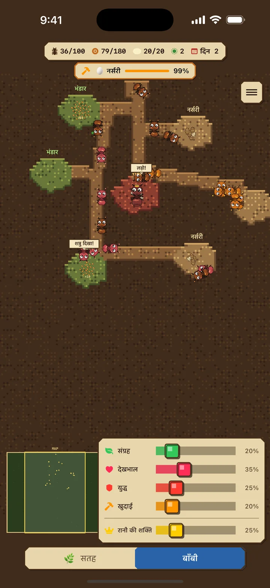
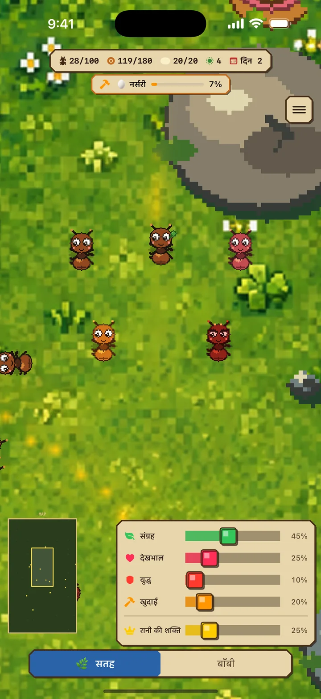
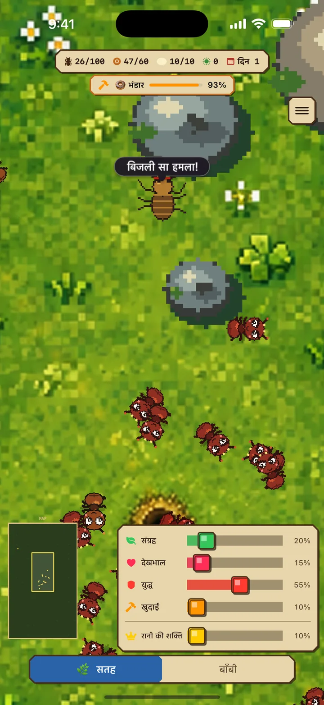
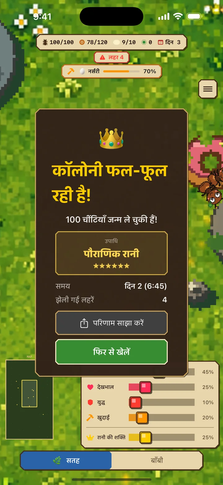

संग्राहक (हरा)
सतह पर भोजन खोजकर बाँबी तक लाती हैं
चींटी डायरी iOS
चींटी कॉलोनी सिम्युलेटर और रियल-टाइम रणनीति गेम
"चींटी डायरी" एक रियल-टाइम रणनीति खेल है जिसमें आप चींटियों की कॉलोनी पालते हैं। रानी के इर्द-गिर्द श्रमिक चींटियों की भूमिकाएँ तय करें, शत्रुओं के हमले झेलें और 100 चींटियों की समृद्ध कॉलोनी खड़ी करें।
मुफ़्त · विज्ञापन शामिल हैं / iPhone के लिए / iOS 17.0+


01 2 दुनिया की खोज
कामगारों को खुदाई में लगाने पर बिल मौजूदा सुरंगों से स्वाभाविक रूप से फैलता है। ज़रूरत के अनुसार भोजन भंडार या शिशु कक्ष अपने आप बनते हैं।
सतह: खतरनाक दुनिया जहाँ भोजन जुटाना और लड़ना होता है
बाँबी: लार्वा पालने और नए कक्ष खोदने का सुरक्षित ठिकाना
कमरे भोजन और शिशुओं की क्षमता बढ़ाते हैं। भोजन भंडार भरने पर भोजन-संग्राहक प्रतीक्षा करते हैं और जगह बनते ही अपने आप काम फिर शुरू कर देते हैं।
02 रणनीति के लिए 4 भूमिकाएँ
स्थिति के अनुसार भूमिकाओं का संतुलन बदलना ही जीवित रहने की कुंजी है।
सतह पर भोजन खोजकर बाँबी तक लाती हैं
लार्वा को खिलाकर नई श्रमिक चींटियाँ तैयार करती हैं
शत्रुओं से लड़कर कॉलोनी की रक्षा करती हैं
बिल को बड़ा करने के लिए खुदाई करती है — कमरे पूरे होने पर भोजन और बच्चों की क्षमता बढ़ती है
अंडे देने की गति 3 गुना तक बढ़ाने के लिए रानी शक्ति बढ़ाएँ। बदले में रानी को 8 गुना तक जल्दी भूख लगती है और परिचारिकाओं को उसे खिलाना, अंडे ढोना और लार्वा सँभालना पड़ता है। शक्ति को कॉलोनी के अनुसार बदलें।

03 शत्रु लहरों से बचाव करें
समय के साथ हमले तीखे होते जाते हैं। पहले से सैनिकों की संख्या बढ़ाकर तैयार रहें।
स्थिति के अनुसार भूमिकाओं का संतुलन बदलना ही जीवित रहने की कुंजी है।
App Store से डाउनलोड करें04 समय की चुनौती
100 चींटियों तक का आपका समय तय करता है कि 6 में से कौन-सी उपाधि मिलेगी। 15 मिनट से कम में पौराणिक रानी बनें और नतीजा ऐसे कार्ड से साझा करें जिसका डिज़ाइन उपाधि के अनुसार बदलता है।
100 चींटियों तक पहुँचने में लगा समय ही आपका स्कोर है। सर्वश्रेष्ठ रिकॉर्ड के लिए बार-बार प्रयास करें!


चींटी डायरी
रानी की रक्षा करें और कॉलोनी को 100 चींटियों तक बढ़ाएँ!
App Store से डाउनलोड करेंमुफ़्त · विज्ञापन शामिल हैं / iPhone के लिए / iOS 17.0+